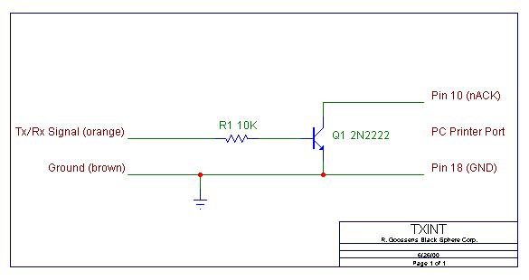

R/C Sim Interface Schematic
This simple transmitter interface connects an R/C transmitter (or receiver) to the PC's parallel port. By means of a kernel mode driver (Vmyxd.vxd on Windows 95/98/Me or Txintpar.sys on Windows NT/2K/XP) the signal is hooked up to the R/C Sim application.
The only components needed to construct the interface are a 10K resistor and an NPN-transistor. Make sure the transmitter is set to PPM mode.

Back